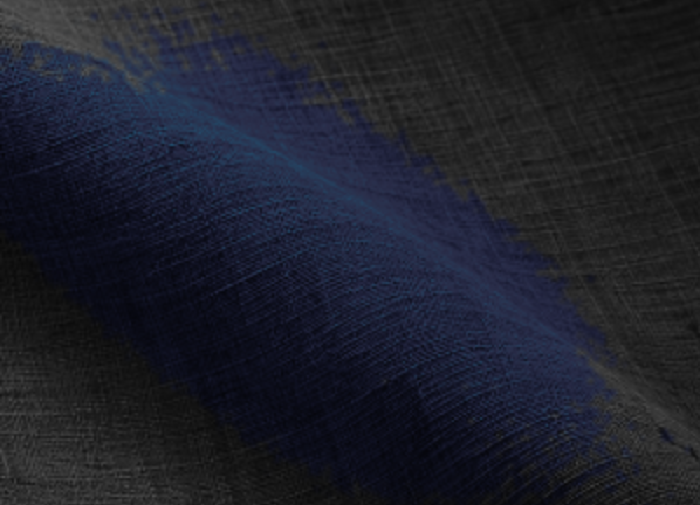

あわい / 2026-10-11 実機前の直し
藍の暗さ、入力の保持、負荷時の見え方。
スマホで通し版を開く · 素材台帳 · 制作メモ
自動確認は構造と画面の変化の確認です。iPhone・Androidでの触れることへの気づき、暗部の視認性、触感、美術評価は本人の実機確認待ちです。
原寸PNGのRGB最大差が12/255を超えた画素の面積%と、その画素群の最大差平均を測定。390×844と1280×800。Y=.2126R+.7152G+.0722B（符号化RGB、0〜255）。測定画像の縮小・JPEG圧縮はしていません。
画素差の全表
| 環境 | 介入 | 最中：面積% / 平均差 | 離して0.5秒 | 記録 |
|---|---|---|---|---|
| chromium SP | S0 稜線・2.6秒 | 6.99% / 32.91 | 3.47% / 24.60 | 測定済み |
| chromium SP | S0 上1/3・記録のみ | 5.53% / 24.00 | 1.97% / 17.37 | 参考位置 |
| chromium SP | S2 横ドラッグ | 26.99% / 23.54 | 23.05% / 21.88 | 測定済み |
| chromium SP | S2 300ms停止後 | 26.99% / 23.54 | 23.04% / 21.87 | 測定済み |
| chromium SP | S3 p=0.15 | 6.51% / 18.54 | 6.51% / 18.54 | 測定済み |
| chromium SP | S3 p=0.5 | 6.51% / 18.54 | 6.51% / 18.54 | 測定済み |
| chromium SP | S4 中央・2.6秒 | 5.25% / 18.71 | 1.58% / 14.00 | 測定済み |
| chromium PC | S0 稜線・2.6秒 | 4.35% / 33.09 | 2.39% / 24.13 | 測定済み |
| chromium PC | S0 上1/3・記録のみ | 46.39% / 48.27 | 1.78% / 18.46 | 参考位置 |
| chromium PC | S2 横ドラッグ | 27.21% / 23.40 | 24.04% / 21.91 | 測定済み |
| chromium PC | S2 300ms停止後 | 27.21% / 23.40 | 23.99% / 21.92 | PC参考 |
| chromium PC | S3 p=0.15 | 17.84% / 21.58 | 17.84% / 21.58 | 測定済み |
| chromium PC | S3 p=0.5 | 17.84% / 21.58 | 17.84% / 21.58 | 測定済み |
| chromium PC | S4 中央・2.6秒 | 3.05% / 18.40 | 0.17% / 13.17 | 測定済み |
| webkit SP | S0 稜線・2.6秒 | 7.17% / 32.91 | 4.64% / 26.17 | 測定済み |
| webkit SP | S0 上1/3・記録のみ | 5.61% / 24.17 | 3.04% / 18.80 | 参考位置 |
| webkit SP | S2 横ドラッグ | 27.24% / 23.65 | 23.42% / 22.06 | 測定済み |
| webkit SP | S2 300ms停止後 | 27.24% / 23.65 | 23.53% / 22.10 | 測定済み |
| webkit SP | S3 p=0.15 | 5.69% / 18.01 | 5.69% / 18.01 | 測定済み |
| webkit SP | S3 p=0.5 | 5.69% / 18.01 | 5.69% / 18.01 | 測定済み |
| webkit SP | S4 中央・2.6秒 | 5.20% / 18.85 | 2.15% / 14.57 | 測定済み |
| webkit PC | S0 稜線・2.6秒 | 3.27% / 37.58 | 1.84% / 35.40 | 仮・目安未達 |
| webkit PC | S0 上1/3・記録のみ | 2.83% / 24.69 | 1.59% / 19.29 | 参考位置 |
| webkit PC | S2 横ドラッグ | 27.51% / 23.52 | 25.32% / 22.73 | 測定済み |
| webkit PC | S2 300ms停止後 | 27.51% / 23.52 | 25.32% / 22.71 | PC参考 |
| webkit PC | S3 p=0.15 | 16.00% / 20.75 | 16.00% / 20.75 | 測定済み |
| webkit PC | S3 p=0.5 | 15.99% / 20.75 | 15.99% / 20.75 | 測定済み |
| webkit PC | S4 中央・2.6秒 | 3.02% / 18.54 | 1.38% / 14.97 | 測定済み |
S3 深い藍の色と広がり
元G1の同じ画素から、黒布を0.55Y、藍を黒布より暗い目標Yで作成。濃紺 #181B39 → #2A2E4E、ハイライト上限 #165E83。灰色を6〜12%混ぜ、元の藍筋では灰の混合を減らしています。黒・藍ともlossless WebP。新画像生成なし。
| 素材 | 黒の平均Y | 藍の平均Y | 差 | 画素ごとの最大増加 | B−R中央値 |
|---|---|---|---|---|---|
| PC | 21.00 | 18.29 | -2.70 | 0.22（+3超 0画素） | 13 |
| SP | 23.42 | 20.67 | -2.75 | 0.22（+3超 0画素） | 18 |
介入の染め領域は、最中に画素差が12を超えた同じ画素群で比較しています。
| 環境 / 位置 | 前Y | 最中Y | 後Y | 最中−前 | B−R中央値 |
|---|---|---|---|---|---|
| chromium sp / 0.15 | 44.11 | 37.64 | 37.64 | -6.46 | 30 |
| chromium sp / 0.5 | 44.11 | 37.64 | 37.64 | -6.46 | 30 |
| chromium pc / 0.15 | 44.17 | 37.23 | 37.23 | -6.94 | 28 |
| chromium pc / 0.5 | 44.17 | 37.23 | 37.23 | -6.94 | 28 |
| webkit sp / 0.15 | 43.99 | 38.18 | 38.18 | -5.82 | 28 |
| webkit sp / 0.5 | 43.99 | 38.18 | 38.18 | -5.82 | 28 |
| webkit pc / 0.15 | 45.68 | 39.31 | 39.31 | -6.36 | 27 |
| webkit pc / 0.5 | 45.67 | 39.31 | 39.31 | -6.36 | 27 |
細かな繊維の明暗と折れ目の勾配を染め境界へ掛け、3つのつながった斜めの広がりを作っています。触った染みと受動の染めに同じ藍画像を使用。
SP p=0.15 染め境界の4倍拡大

PC 元G1 → 黒布 → 全面藍
 元G1
元G1 黒布
黒布 全面藍
全面藍SP 元G1 → 黒布 → 全面藍
 元G1
元G1 黒布
黒布 全面藍
全面藍S2 ネイティブタッチ
canvasから舞台へタッチの受け取り先を移すときのlostpointercaptureを、指を離したと誤判定していました。移管元から伝わるイベントを区別し、舞台自身が受け取りを失った場合だけ解放します。初期の小さな移動はブラウザの判定待ちとして残し、横ドラッグが始まってから解放直前までの維持を検査。
| Chromium SP | ドラッグ維持 | 初期待機 | 解放後の戻り |
|---|---|---|---|
| S2 横ドラッグ | 維持 | 1移動 | 1199.50ms / 単調 true |
| S2 300ms停止後 | 維持 | 1移動 | 1201.60ms / 単調 true |
縦方向はpan-y pinch-zoomを維持。Chromium SPはCDPネイティブ縦スワイプで4場面を確認。WebKit SPは合成PointerEventで、iPhoneのネイティブ入力確認ではありません。
品質の切替とCPU4倍遅い設定
画像decode完了から1.5秒は品質判定に含めません。直近30描画の平均と、22msを超えた描画数による持続負荷条件を併用。DPR → 描画とマスク解像度 → 新規の跡数 → 琥珀にじみ解像度 → にじみ無効の順に下げます。既存の跡と染みを保持してリサイズ。
単発500msで通常品質を維持：true。継続負荷で切替：true。切替前後の場面・時間・長押し・跡・染み保持：true。切替順：true。負荷を注入した検査記録
以下はChromium / 390×844 / CDP CPU throttling rate=4。全描画フレームの処理平均と最大を記録。実機のfps・処理時間とは異なる指標です。
| 期間 | 平均ms | 最大ms | 品質段階 |
|---|---|---|---|
| 全編 | 17.10 | 302.20 | 2 |
| S3 30回なぞる前 | 22.86 | 31.70 | 2 |
| S3 30回なぞった後 | 15.47 | 17.60 | 5 |
S3平均比 0.68倍。成熟染み 150、広がり中 0。
全編中の品質切替記録
[
{
"scene": "s4-paper",
"p": 0.05242890993749967,
"time": 13316.5,
"elapsed": 13268.800000000745,
"mean": 26.443333333482347,
"sampleCount": 158,
"qualityLevel": 2,
"actions": [
"DPR already 1; render resolution 85%, mask 110"
]
}
]スマホに近い設定のS0
稜線を2.6秒長押し。最中 6.98% / 33.36、解放後 0.47% / 17.65。


構造・性能と残件
Chromium/WebKit × SP/PCで9区間、相談リンク、往復、染み保持、KASANE復帰、Canvas 1枚・WebGL要求0、reduced motion、JS無効を再確認。不具合 0件、画面差の目安未達 1件。
Lighthouseスマホ設定：LCP 1961.93ms / CLS 0 / TBT 1.00ms。INP未取得。EventTiming実験値 80ms（フィールドINPではありません）。
仮のまま残すもの：S2の目の粗い麻、元画像どうしの稜線の位置と曲率、WebKit PCのS0、S4の繊維コントラスト。今回は追加の磨き込みをしていません。
[
{
"browser": "webkit",
"size": "pc",
"case": "s0-ridge",
"duringAreaPercent": 3.274175347222222,
"afterAreaPercent": 1.835329861111111,
"minimumAreaPercent": 4,
"persistenceRequired": false
}
]S4中心40×40画素の平均明るさ：SP +25.01、PC +24.39。細かな明暗の残差RMS比：SP 1.12、PC 1.18。繊維のコントラスト半減は示せていません。
全画素・入力記録 · CPU負荷測定 · 素材の色測定 · 入力原因の記録 · Lighthouse · 入力時間
触らずに通した録画
chromium 介入の前・最中・後
S0 稜線・2.6秒
PC / p=0.5 / 入力 921.60, 464.00px
 前
前 最中
最中4.35% / 33.09
 離して0.5秒
離して0.5秒2.39% / 24.13
SP / p=0.5 / 入力 249.60, 505.76px
 前
前 最中
最中6.99% / 32.91
 離して0.5秒
離して0.5秒3.47% / 24.60
S0 上1/3・記録のみ
PC / p=0.5 / 入力 640.00, 266.67px
 前
前 最中
最中46.39% / 48.27
 離して0.5秒
離して0.5秒1.78% / 18.46
SP / p=0.5 / 入力 195.00, 331.33px
 前
前 最中
最中5.53% / 24.00
 離して0.5秒
離して0.5秒1.97% / 17.37
S2 横ドラッグ
PC / p=0.5 / 入力 640.00, 400.00px
 前
前 最中
最中27.21% / 23.40
 離して0.5秒
離して0.5秒24.04% / 21.91
SP / p=0.5 / 入力 195.00, 422.00px
 前
前 最中
最中26.99% / 23.54
 離して0.5秒
離して0.5秒23.05% / 21.88
S2 300ms停止後
PC / p=0.5 / 入力 640.00, 400.00px
 前
前 最中
最中27.21% / 23.40
 離して0.5秒
離して0.5秒23.99% / 21.92
SP / p=0.5 / 入力 195.00, 422.00px
 前
前 最中
最中26.99% / 23.54
 離して0.5秒
離して0.5秒23.04% / 21.87
S3 p=0.15
PC / p=0.15 / 入力 230.40, 160.00px
 前
前 最中
最中17.84% / 21.58
 離して0.5秒
離して0.5秒17.84% / 21.58
SP / p=0.15 / 入力 70.20, 168.80px
 前
前 最中
最中6.51% / 18.54
 離して0.5秒
離して0.5秒6.51% / 18.54
S3 p=0.5
PC / p=0.5 / 入力 230.40, 160.00px
 前
前 最中
最中17.84% / 21.58
 離して0.5秒
離して0.5秒17.84% / 21.58
SP / p=0.5 / 入力 70.20, 168.80px
 前
前 最中
最中6.51% / 18.54
 離して0.5秒
離して0.5秒6.51% / 18.54
S4 中央・2.6秒
PC / p=0.5 / 入力 640.00, 400.00px
 前
前 最中
最中3.05% / 18.40
 離して0.5秒
離して0.5秒0.17% / 13.17
SP / p=0.5 / 入力 195.00, 472.00px
 前
前 最中
最中5.25% / 18.71
 離して0.5秒
離して0.5秒1.58% / 14.00
chromium 5場面と4つのつなぎ
| 区間 | PC | SP |
|---|---|---|
| s0-membrane |  |  |
| seam-01 |  |  |
| s1-suketo |  |  |
| seam-12 |  |  |
| s2-kasane |  |  |
| seam-23 |  |  |
| s3-aima |  |  |
| seam-34 |  |  |
| s4-paper |  |  |
webkit 介入の前・最中・後
S0 稜線・2.6秒
PC / p=0.5 / 入力 921.60, 464.00px / 仮
 前
前 最中
最中3.27% / 37.58
 離して0.5秒
離して0.5秒1.84% / 35.40
SP / p=0.5 / 入力 249.60, 505.76px
 前
前 最中
最中7.17% / 32.91
 離して0.5秒
離して0.5秒4.64% / 26.17
S0 上1/3・記録のみ
PC / p=0.5 / 入力 640.00, 266.67px
 前
前 最中
最中2.83% / 24.69
 離して0.5秒
離して0.5秒1.59% / 19.29
SP / p=0.5 / 入力 195.00, 331.33px
 前
前 最中
最中5.61% / 24.17
 離して0.5秒
離して0.5秒3.04% / 18.80
S2 横ドラッグ
PC / p=0.5 / 入力 640.00, 400.00px
 前
前 最中
最中27.51% / 23.52
 離して0.5秒
離して0.5秒25.32% / 22.73
SP / p=0.5 / 入力 195.00, 422.00px
 前
前 最中
最中27.24% / 23.65
 離して0.5秒
離して0.5秒23.42% / 22.06
S2 300ms停止後
PC / p=0.5 / 入力 640.00, 400.00px
 前
前 最中
最中27.51% / 23.52
 離して0.5秒
離して0.5秒25.32% / 22.71
SP / p=0.5 / 入力 195.00, 422.00px
 前
前 最中
最中27.24% / 23.65
 離して0.5秒
離して0.5秒23.53% / 22.10
S3 p=0.15
PC / p=0.15 / 入力 230.40, 160.00px
 前
前 最中
最中16.00% / 20.75
 離して0.5秒
離して0.5秒16.00% / 20.75
SP / p=0.15 / 入力 70.20, 168.80px
 前
前 最中
最中5.69% / 18.01
 離して0.5秒
離して0.5秒5.69% / 18.01
S3 p=0.5
PC / p=0.5 / 入力 230.40, 160.00px
 前
前 最中
最中15.99% / 20.75
 離して0.5秒
離して0.5秒15.99% / 20.75
SP / p=0.5 / 入力 70.20, 168.80px
 前
前 最中
最中5.69% / 18.01
 離して0.5秒
離して0.5秒5.69% / 18.01
S4 中央・2.6秒
PC / p=0.5 / 入力 640.00, 400.00px
 前
前 最中
最中3.02% / 18.54
 離して0.5秒
離して0.5秒1.38% / 14.97
SP / p=0.5 / 入力 195.00, 472.00px
 前
前 最中
最中5.20% / 18.85
 離して0.5秒
離して0.5秒2.15% / 14.57
webkit 5場面と4つのつなぎ
| 区間 | PC | SP |
|---|---|---|
| s0-membrane |  |  |
| seam-01 |  |  |
| s1-suketo |  |  |
| seam-12 |  |  |
| s2-kasane |  |  |
| seam-23 |  |  |
| s3-aima |  |  |
| seam-34 |  |  |
| s4-paper |  |  |
公開フォルダから外した旧ファイル
前回除去した旧版81ファイルを戻していません。
build-interactive-review.cjs evidence/320-closing.jpg evidence/checks.json evidence/chromium-pc-s0-membrane-after.jpg evidence/chromium-pc-s0-membrane-before.jpg evidence/chromium-pc-s0-membrane-during.jpg evidence/chromium-pc-s2-kasane-after.jpg evidence/chromium-pc-s2-kasane-before.jpg evidence/chromium-pc-s2-kasane-during.jpg evidence/chromium-pc-s3-aima-after.jpg evidence/chromium-pc-s3-aima-before.jpg evidence/chromium-pc-s3-aima-during.jpg evidence/chromium-pc-s4-paper-after.jpg evidence/chromium-pc-s4-paper-before.jpg evidence/chromium-pc-s4-paper-during.jpg evidence/chromium-sp-s0-membrane-after.jpg evidence/chromium-sp-s0-membrane-before.jpg evidence/chromium-sp-s0-membrane-during.jpg evidence/chromium-sp-s2-kasane-after.jpg evidence/chromium-sp-s2-kasane-before.jpg evidence/chromium-sp-s2-kasane-during.jpg evidence/chromium-sp-s3-aima-after.jpg evidence/chromium-sp-s3-aima-before.jpg evidence/chromium-sp-s3-aima-during.jpg evidence/chromium-sp-s4-paper-after.jpg evidence/chromium-sp-s4-paper-before.jpg evidence/chromium-sp-s4-paper-during.jpg evidence/cut-sheet.jpg evidence/interactive-overview.jpg evidence/live-ending.jpg evidence/live-interactive.json evidence/live-review.jpg evidence/mobile-scroll.mp4 evidence/no-js.jpg evidence/pc-closing.jpg evidence/pc-cut1-after.jpg evidence/pc-cut1-before.jpg evidence/pc-cut2-after.jpg evidence/pc-cut2-before.jpg evidence/pc-cut3-after.jpg evidence/pc-cut3-before.jpg evidence/pc-cut4-after.jpg evidence/pc-cut4-before.jpg evidence/pc-opening.jpg evidence/recording.json evidence/screenshot-presentation.json evidence/sp-closing.jpg evidence/sp-cut1-after.jpg evidence/sp-cut1-before.jpg evidence/sp-cut2-after.jpg evidence/sp-cut2-before.jpg evidence/sp-cut3-after.jpg evidence/sp-cut3-before.jpg evidence/sp-cut4-after.jpg evidence/sp-cut4-before.jpg evidence/sp-opening.jpg evidence/webkit-pc-s0-membrane-after.jpg evidence/webkit-pc-s0-membrane-before.jpg evidence/webkit-pc-s0-membrane-during.jpg evidence/webkit-pc-s2-kasane-after.jpg evidence/webkit-pc-s2-kasane-before.jpg evidence/webkit-pc-s2-kasane-during.jpg evidence/webkit-pc-s3-aima-after.jpg evidence/webkit-pc-s3-aima-before.jpg evidence/webkit-pc-s3-aima-during.jpg evidence/webkit-pc-s4-paper-after.jpg evidence/webkit-pc-s4-paper-before.jpg evidence/webkit-pc-s4-paper-during.jpg evidence/webkit-sp-s0-membrane-after.jpg evidence/webkit-sp-s0-membrane-before.jpg evidence/webkit-sp-s0-membrane-during.jpg evidence/webkit-sp-s2-kasane-after.jpg evidence/webkit-sp-s2-kasane-before.jpg evidence/webkit-sp-s2-kasane-during.jpg evidence/webkit-sp-s3-aima-after.jpg evidence/webkit-sp-s3-aima-before.jpg evidence/webkit-sp-s3-aima-during.jpg evidence/webkit-sp-s4-paper-after.jpg evidence/webkit-sp-s4-paper-before.jpg evidence/webkit-sp-s4-paper-during.jpg finalize-evidence.cjs